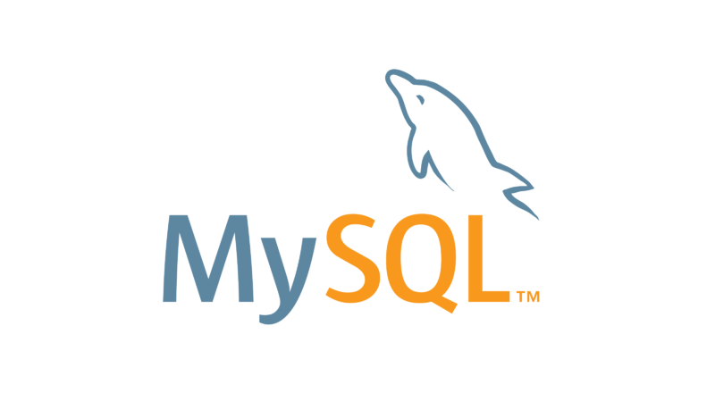
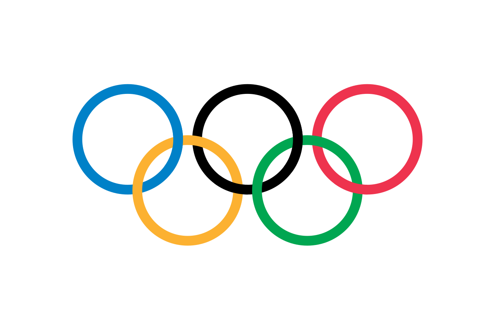
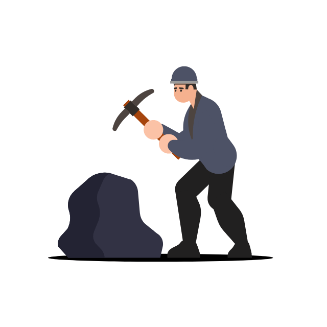

Astronaut Project
A relational database project centered around astronauts, missions, and space-related records. This project is useful for demonstrating joins, structured entity relationships, and query-based analysis in a more complex domain.

Collection of SQL projects covering database design, schema creation, joins, aggregations, constraints, and analytical query solving.
This section of the portfolio presents a collection of MySQL projects created around database design and query writing. The work includes both schema-building tasks and analytical SQL exercises based on different domains such as space missions, sports results, transportation, culture, dictionaries, and film-related datasets.
The goal of these projects was to demonstrate practical SQL thinking: building relational structures, defining keys and constraints, inserting structured data, and solving real query problems with clear and well-organized SQL statements.
Designing relational schemas with multiple related tables, clear entity structure, and proper normalization logic.
Writing filtering, sorting, joining, grouping, and aggregation queries to answer practical data questions.
Using primary keys, foreign keys, constraints, and validation logic to enforce consistency.
Translating business-style or exam-style questions into correct SQL solutions across different domains.
Although the projects differ by topic, they follow a similar development logic: define the schema, load or insert structured data, and then solve increasingly complex query tasks on top of that database.
Database Design → Table Creation → Keys & Constraints → Data Insertion / Import → Query Solving → Join Logic → Aggregation & Reporting
From the full MySQL collection, these three projects best represent the type of SQL work included in this portfolio. They were selected because they show stronger multi-table logic, clearer analytical use cases, and more realistic relational structure.
A relational database project centered around astronauts, missions, and space-related records. This project is useful for demonstrating joins, structured entity relationships, and query-based analysis in a more complex domain.

A sports-oriented SQL project focused on Olympic-style data and measurement-based results. It is especially strong for ranking logic, grouped summaries, and result-based analytical queries.
A film-related relational database containing entities such as titles, people, and roles. This project is a strong example of multi-table querying, relationship handling, and domain-based SQL exploration.
Beyond the featured projects, the full collection contains several smaller SQL exercises and schema-focused tasks. These projects helped build speed and confidence in writing correct queries across different topics and data structures.

SQL query practice on smaller structured dataset correlated to mining operations.

Schema design and query practice on smaller structured dataset related to skiing activities.
Airport-related relational tasks with entity linking and filtering logic.
Culture-themed SQL exercises focused on joins and data retrieval.
Delivery-related project with structured records and query tasks.
Dictionary-style schema useful for simple relational modeling practice.

Domain-based SQL exercise with linked entities and filtered lookups.
Attendance or audience-themed relational dataset with reporting queries.
Smaller query exercises focused on SQL basics and problem-solving.
These SQL projects are presented mainly as portfolio demonstrations rather than standalone GitHub-ready applications. Their purpose is to showcase relational database design and SQL query problem solving across multiple datasets. For this reason, the SQL scripts used in these projects are also available on GitHub for further exploration. The repository contains the database schemas, example datasets, and query solutions used in the exercises presented on this page.